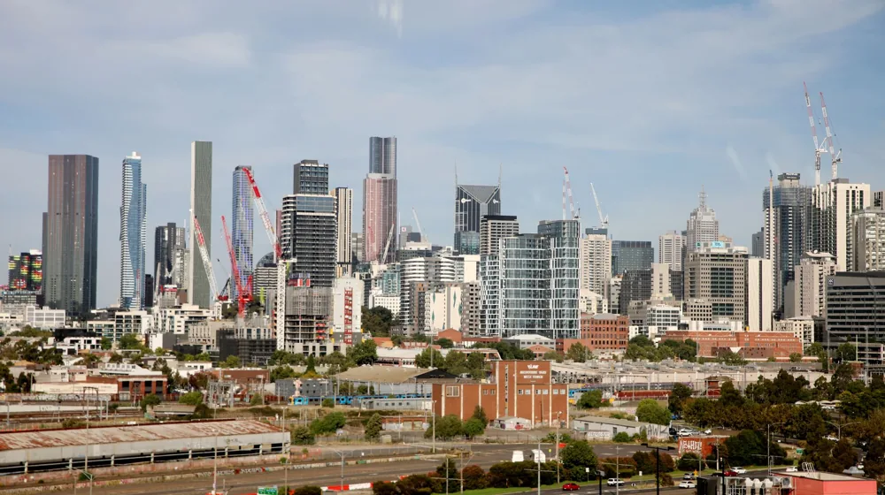

호반건설, 대체 왜 난리일까? 숨겨진 진짜 이유와 놀라운 반전!
사진: Nothing Ahead / Pexels (무료 이미지, 출처 표기)
혹시 '호반건설'이라는 이름에 대해 들어보셨나요?

어쩌면 고개를 갸웃하실 수도 있습니다. 하지만 오늘, 이 평범해 보이던 건설사의 이름이 대한민국 인터넷 검색창을 뜨겁게 달구며 실시간 검색어 1위에 급부상했습니다! 마치 '호기심 천국'의 한 장면처럼, 왜 갑자기 이 기업이 대중의 시선을 사로잡았을까요? 단순한 건설사를 넘어, 그 이면에 숨겨진 놀라운 비밀과 예상치 못한 반전 스토리를 지금부터 함께 파헤쳐 보겠습니다!
호반건설, 이 시점에 급부상한 미스터리: '빅딜'의 서막인가?
대부분의 사람들에게 '건설사'는 그저 건물을 짓는 회사로 인식되기 마련입니다. 그런데 '호반건설'이 갑자기 왜 화제의 중심에 섰을까요? 그 시작점은 의외로 우리의 예상과는 다른 곳에 있습니다. 최근 언론과 재계에서는 호반그룹의 심상치 않은 움직임에 주목하고 있습니다. 단순히 아파트를 짓는 것을 넘어, 유력한 미디어 기업 인수설부터 새로운 미래 산업 진출 가능성까지 다양한 관측이 쏟아져 나오고 있기 때문이죠. 이러한 소문들이 한데 모여 대중의 호기심을 자극했고, 결국 '호반건설'이라는 키워드가 포털 사이트 상위권에 오르는 기현상을 만들어냈습니다.
하지만 이것은 빙산의 일각일 뿐입니다. 호반그룹의 진짜 저력은 '보이는 것 그 이상'이라는 사실을 아셨나요? 그들의 행보는 단순한 건설사의 영역을 훨씬 뛰어넘고 있습니다.
단순한 아파트만 짓는다? 재계가 주목하는 '문어발식' 확장 전략의 비밀
많은 분들이 호반건설을 그저 '아파트 잘 짓는 회사' 정도로만 알고 계실 겁니다. 하지만 그들의 사업 영역을 들여다보면 깜짝 놀라실 겁니다! 호반그룹은 1989년 창립 이래 건설업을 기반으로 초고속 성장을 이뤄냈습니다. 놀라운 점은 여기에 멈추지 않고, 사업 다각화를 통해 우리의 일상 곳곳에 스며들어 있다는 사실입니다.
- 미디어: 국내 굴지의 경제신문사를 인수하며 언론 재벌의 반열에 올랐습니다.
- 레저: 골프장, 리조트 등 프리미엄 레저 시설을 운영하며 여가 산업에도 깊이 발을 담그고 있습니다.
- 유통 및 금융: 건설업과의 시너지를 창출할 수 있는 다양한 분야로 끊임없이 영역을 확장하고 있습니다.
이러한 '문어발식' 확장 전략은 단순한 외형 성장을 넘어, 그룹 전체의 안정적인 수익 구조를 만들고 미래 성장 동력을 확보하는 데 결정적인 역할을 했습니다. 우리가 미처 알지 못했던 사이에, 호반그룹은 어느덧 대한민국 경제의 상당 부분을 아우르는 거대 기업집단으로 성장한 것이죠.
숫자로 보는 호반그룹: 놀라운 성장세 뒤에 숨겨진 '초고속 질주'의 비결
호반그룹의 성장세는 숫자로 더욱 확연히 드러납니다. 그들의 기업 규모와 재계 순위를 보면 입이 떡 벌어질 정도인데요. 불과 몇 년 사이에 대기업집단 순위가 수직 상승하며 재계의 다크호스로 떠올랐습니다. 그 비결은 무엇일까요? 과감한 투자, 신속한 의사결정, 그리고 무엇보다 미래를 내다보는 혜안이 있었기에 가능한 일이었습니다. 다음 표를 통해 호반그룹의 사업 다각화 현황을 한눈에 살펴보겠습니다.
이처럼 광범위한 사업 영역은 호반그룹이 단순한 건설사를 넘어 '종합 생활 문화 기업'으로 진화하고 있음을 명확히 보여줍니다.
건설 명가를 넘어선 '생활 문화 기업'으로의 변신: 우리의 일상과 연결된 호반
호반그룹은 이제 단순히 우리가 살 집을 짓는 것을 넘어, 우리의 삶의 질을 높이고 여가와 문화를 제공하는 기업으로 변모하고 있습니다. 주말에 즐기는 골프장, 여행지의 리조트, 매일 아침 읽는 경제 뉴스까지, 우리가 알지 못하는 사이에 호반그룹은 이미 우리의 일상 곳곳에 깊숙이 자리하고 있는 것입니다. '내가 살던 아파트가 호반건설 거였는데, 설마 그 회사가 신문사도 운영하고 골프장도 갖고 있다고?'라고 생각하면 그야말로 '세상에 이런 일이!'가 아닐 수 없습니다. 이러한 예상치 못한 연결고리는 대중의 호기심을 더욱 증폭시키며 '호반건설'이라는 이름을 다시 한번 각인시키는 계기가 되고 있습니다.
미래를 짓는 호반건설: 다음 10년을 이끌 비전과 과제는?
급변하는 시대 속에서 호반그룹은 어떤 미래를 그려나가고 있을까요? 그들은 전통적인 건설업의 강점을 유지하면서도, 끊임없이 새로운 성장 동력을 발굴하고 있습니다. 스마트시티 건설, 친환경 에너지 사업, 그리고 첨단 기술을 접목한 주택 개발 등 다양한 미래 사업에 대한 투자를 아끼지 않고 있습니다. 하지만 이러한 고속 성장의 이면에는 끊임없는 도전과 과제도 존재합니다. 급변하는 부동산 시장, 치열한 경쟁, 그리고 사회적 책임 요구 등 넘어야 할 산이 많습니다. 과연 호반그룹이 이러한 난관들을 헤쳐나가며 다음 10년을 선도하는 기업으로 자리매김할 수 있을지, 우리는 흥미로운 시선으로 그들의 행보를 지켜봐야 할 것입니다.
오늘 '호반건설'이 검색어에 오르며 우리에게 보여준 것은 단순히 한 기업의 이름이 아니었습니다. 눈에 보이는 것 너머에 숨겨진 거대한 비즈니스 제국과, 우리의 일상에 생각보다 깊숙이 들어와 있는 그들의 영향력을 다시 한번 깨닫게 해준 놀라운 반전의 순간이었죠. 앞으로 호반그룹이 또 어떤 '세상에 이런 일이' 같은 스토리를 만들어낼지 기대되지 않나요?
🔗 이 글도 함께 보면 좋아요: 인천 유나이티드 FC, 왜 갑자기 난리일까? 핫이슈 이면의 충격 반전